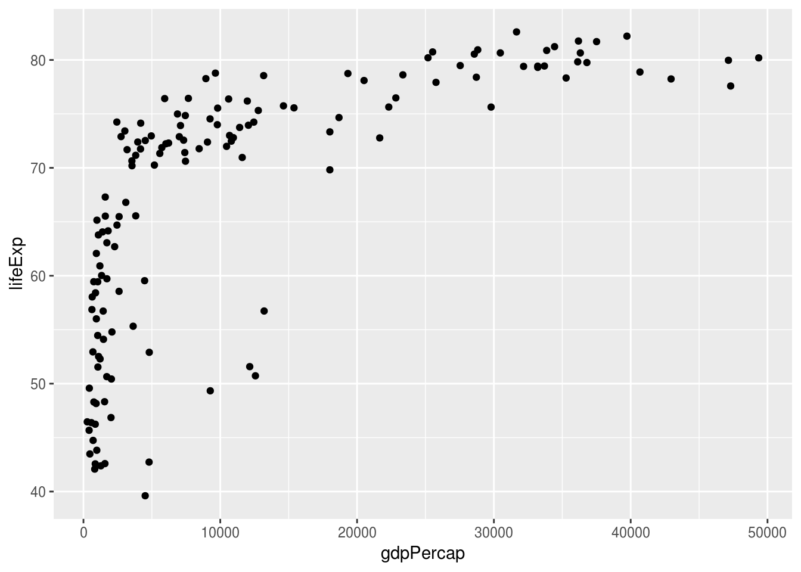
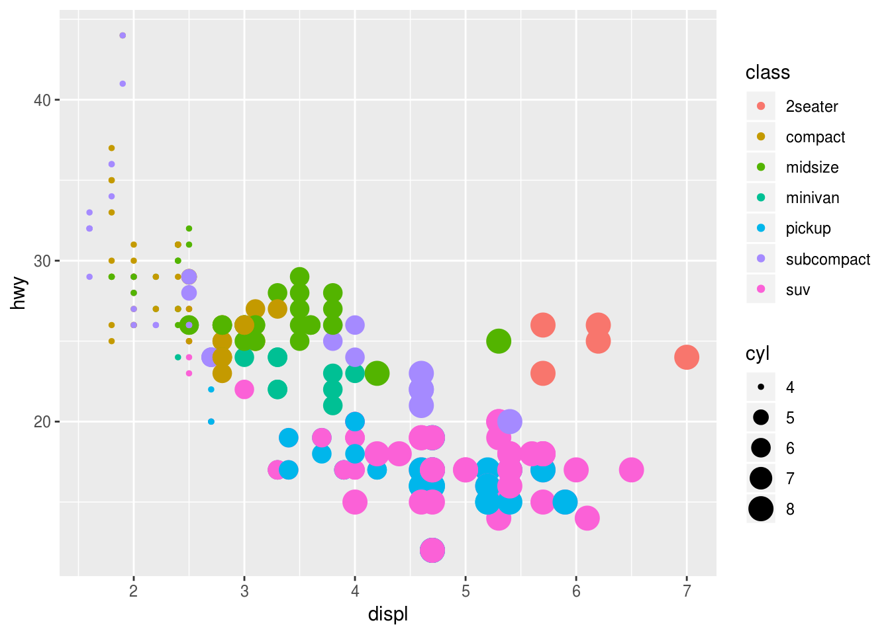
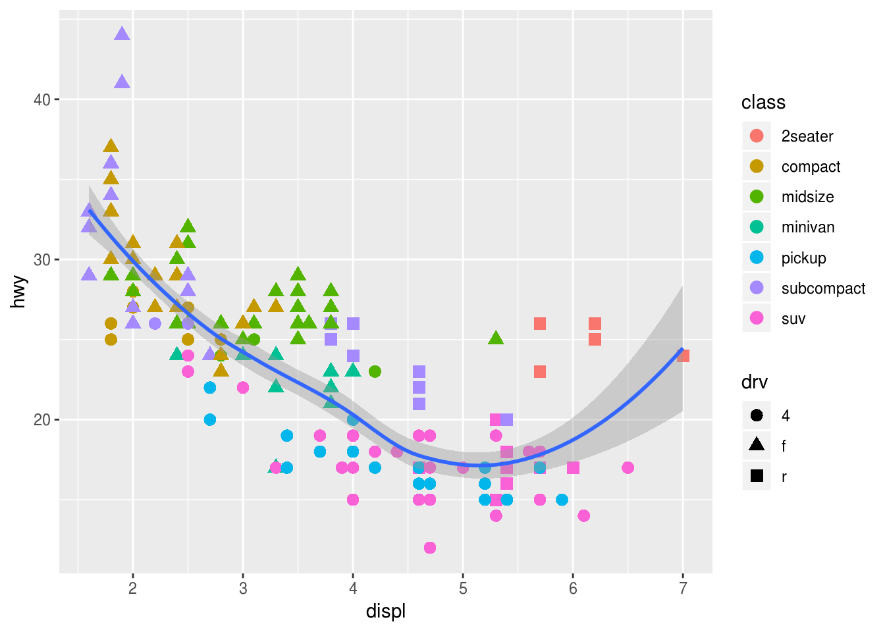
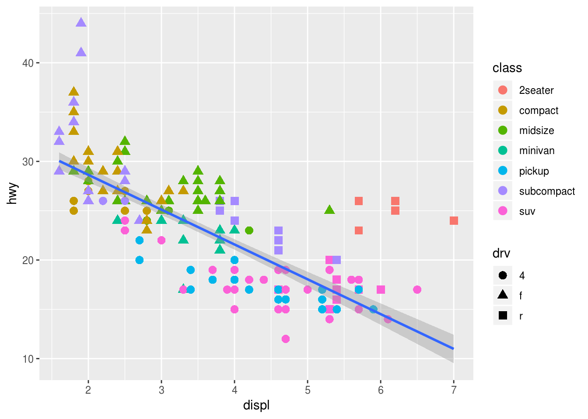
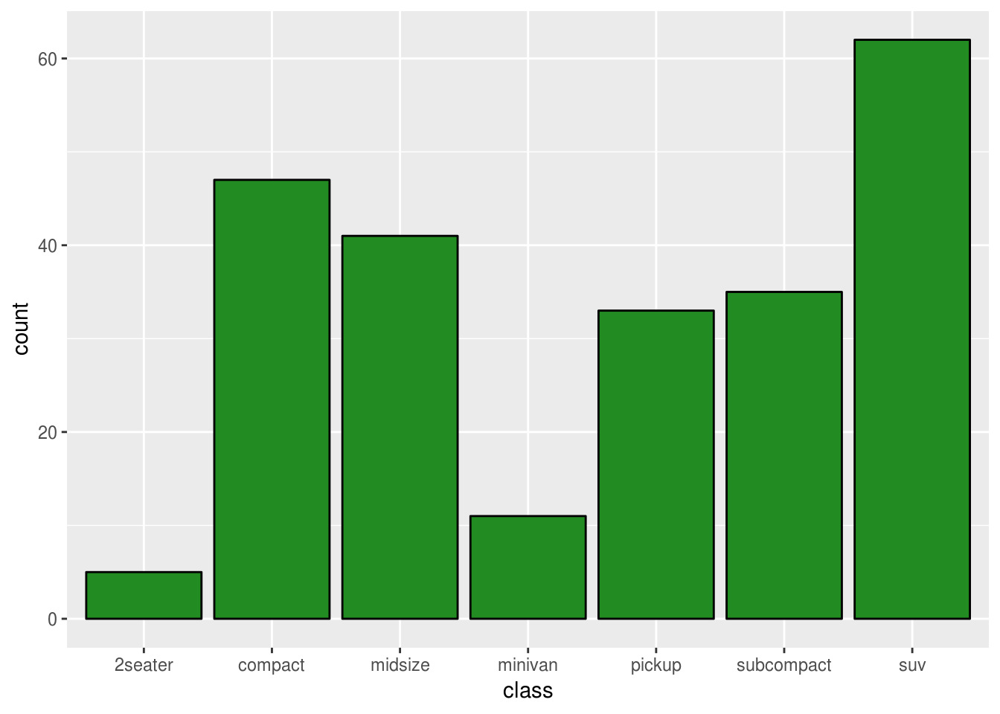
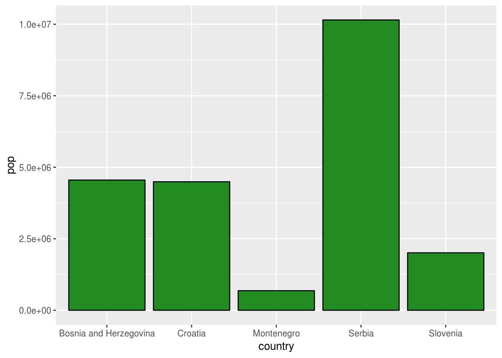
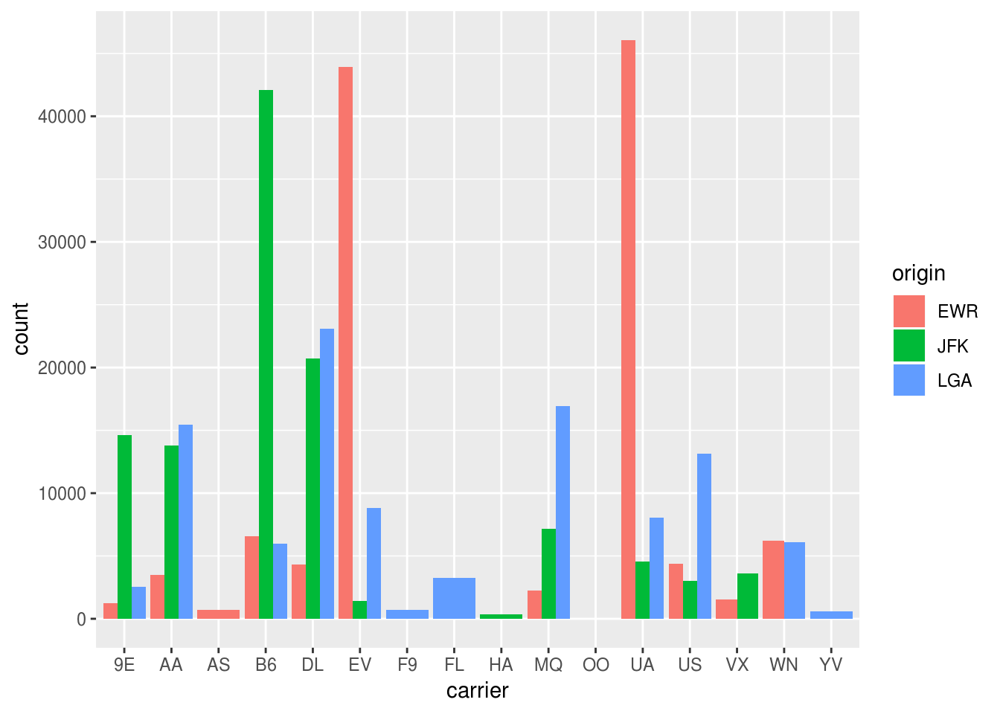

1 Grafički prikaz podataka
Prvo ćemo se zabavljati grafičkim prikazima podataka i crtanjem raznih grafika,
koristeći paket ggplot2 koji je jedan od najupotrebljenijih paketa u R-u.
Velika prednost ovog paketa je što sa vrlo malo koda možemo da pravimo dosta
bogate grafike. S druge strane, ima malo čudniju sintaksu od klasičnih grafika u
R-u, pa zahteva malo učenja. Medjutim ta sintaksa je prilično smislena i
elegentna, kao što ćemo videti kroz rad.
1.1 Uvodni primeri i napomene
Kao inicijalnu demonstraciju sile, pogledajmo sledeći grafik, na kome se vidi dosta različitih elemenata, poput raznih boja za razne promenljive, različite veličine tačaka, prikaz legende itd.
## Registered S3 methods overwritten by 'ggplot2':
## method from
## [.quosures rlang
## c.quosures rlang
## print.quosures rlang
Kod koji generiše ovaj grafik je sledeči. Primetite da samo zadnja naredba crta grafik, pre toga je prosto smanjivanje količine podataka.
library(ggplot2)
library(gapminder)
gapminder2007 <- gapminder[gapminder$year == 2007, ]
ggplot(data = gapminder2007) +
geom_point(mapping = aes(x = gdpPercap,
y = lifeExp,
color = continent,
size = pop))Proći ćemo kroz sve delove ovog koda vremenom i ubrzo ćete moći da pravite ovakve grafike bez problema. Prvo ipak malo teorije.
Paket ggplot2 se zasniva na takozvanoj “gramatici grafike” i uočljivo je u prethodnom kodu da se grafici prave “sabiranjem”. Zabpravo dodajemo komponentu po komponentu na grafik. Glavni delovi koje grafik ima su:
- Podaci (
data): Skup podataka koji se prikazuje - Geometrijski objekat (
geom_*): Tip geometrijskog objekta kojim se prikazuju podaci. Mogu biti tačke, linije, histogrami, itd. - Estetski parametri (
aes()): Estetski atributi koji se mogu dodeliti geometrijskim objektima. Uvek imamo x/y koordinatu, a možemo dodati i boju, veličinu, itd. Svaki estetski parametar se može primeniti na promenljivu u podacima, pa svaki element u podacima ima svoju vrednost tog parametra (npr. gore su sve tačke iz istih kontinenata isto obojene).
Grafike koristeći ggplot pravimo prateći sledeći šablon:
ggplot(data = <Podaci>) +
<geom_funkcija>(mapping = aes(<estetski parametri>))Bitno je pomenuti da ne postoji podrazumevani grafik u ggplot, već se mora dodati neki geometrijcki objekat (pozivom neke geom_* funkcije). Pozivanjem samo ggplot(data=...) dobija se prazan grafik:
ggplot(data = gapminder2007)Neki estetski parametri se mogu dodeliti i na početku, npr. odmah možemo postaviti x i y osu u pozivu ggplot, pa će ona ostati fiksna za sledeće elemente grafika. Ovako možemo nacrtati prethodni grafik (bez boja i sl.).
# sablon bi bio:
# ggplot(data=gapminder2007) +
# geom_point(aes(x = gdpPercap, y = lifeExp))
ggplot(data = gapminder2007, aes(x = gdpPercap, y = lifeExp)) +
geom_point()
Vrlo bitna napomena! Znak " + " mora stajati na kraju reda ako se prelama red. Naredni kod ne radi kako treba:
ggplot(data = gapminder2007, aes(x = gdpPercap, y = lifeExp))
+ geom_point()
## Error: Cannot use `+.gg()` with a single argument. Did you accidentally put + on a new line?1.2 Razni primeri grafika
Sada ćemo prikazati nekoliko vrsta grafika koji se mogu crtati. Gledaćemo scatterplotove, linijske grafike, histograme, boks plotove i bar plotove. Prevode sa engleskog ćemo možda smisliti.
1.2.1 Scatterplotovi
Ovi grafici su grafici koji prikazuju podatke kao tačke u ravni. Prikazaćemo nekoliko primera i navesti nekoliko svojstava koja se mogu menjati. Ne možemo preći sve jer ih je previše.
Geometrijski objekat, tj. funkcija koja se koristi u ove svrhe je geom_point.
Koristićemo za početak podatke mpg, dostupne u paketu ggplot2.
Opis podataka dobijamo pozivom ?mpg (mora biti učitan paket ggplot2). Pogledajmo šta ima u njima.
mpg## # A tibble: 234 x 11
## manufacturer model displ year cyl trans drv cty hwy fl class
## <chr> <chr> <dbl> <int> <int> <chr> <chr> <int> <int> <chr> <chr>
## 1 audi a4 1.8 1999 4 auto… f 18 29 p comp…
## 2 audi a4 1.8 1999 4 manu… f 21 29 p comp…
## 3 audi a4 2 2008 4 manu… f 20 31 p comp…
## 4 audi a4 2 2008 4 auto… f 21 30 p comp…
## 5 audi a4 2.8 1999 6 auto… f 16 26 p comp…
## 6 audi a4 2.8 1999 6 manu… f 18 26 p comp…
## 7 audi a4 3.1 2008 6 auto… f 18 27 p comp…
## 8 audi a4 q… 1.8 1999 4 manu… 4 18 26 p comp…
## 9 audi a4 q… 1.8 1999 4 auto… 4 16 25 p comp…
## 10 audi a4 q… 2 2008 4 manu… 4 20 28 p comp…
## # … with 224 more rowsNapravimo običan scatterplot koji prikazuje potrošnju automobila u odnosu na zapreminu motora.
Potrošnja (na autoputu) hwy je u miljama po galonu, a zapremina motora displ u litrima. Dakle, što je manja mpg, auto više troši.
ggplot(data = mpg, aes(x = displ, y = hwy)) +
geom_point()
Vidimo da postoji opadajući trend, tj. što veći motor imamo, potrošnja goriva raste, ali imamo neke tačke koje odstupaju od trenda pri desnom kraju slike. Unesimo malo boje u grafik da probamo da vidimo šta se dešava. Možemo da probamo da nadjemo klastere u podacima na osnovu klase vozila (kombi, SUV, mali auto, sportski itd.), koja nam je data u promenljivoj class u podacima. To prosto radimo tako što dodamo estetski parametar color = class u geom_point poziv.
ggplot(data = mpg, aes(x = displ, y = hwy)) +
geom_point(aes(color = class))
Vidimo da su ove tačke što odstupaju zapravo sportski automobili (2seater), koji imaju mnogo velike motore a malu masu, pa im je potrošnja manja nego od SUV, pikap i minivan vozila, koji vidimo da su pri dnu grafika.
Možemo da napravimo grafik tako da i veličinu tačke stavi u zavisnosti koliko cilindara ima motor. Opet, samo dodamo estetski parametar size = cyl.
ggplot(data = mpg, aes(x = displ, y = hwy)) +
geom_point(aes(color = class, size = cyl))
Grafik je pomalo smešan, ali se vidi da veliki potrošaći imaju motore sa više cilindara.
Može se menjati i oblik tačkica prosledjivanjem estetskog parametra shape. Sada u zavisnosti od tipa pogona (prednji, zadnji, sva 4 točka) imamo različit oblik.
ggplot(data = mpg, aes(x = displ, y = hwy)) +
geom_point(aes(color = class, shape = drv))
Ovde su tačke dosta sitne i ne vide se lepo oblici, tako da možemo povećati sve tačke dodavanjem argumenta size samoj funkciji geom_point.
Napomena! Ne dodajemo argument unutar aes nego van aes a unutar geom_point.
ggplot(data = mpg, aes(x = displ, y = hwy)) +
geom_point(mapping = aes(color = class, shape = drv), size = 3)
Sad je sve uočljivije. Vidimo da sportska kola (crvena) imaju uvek zadnji pogon.
Ono što je vrlo lepo kod ggplot-a je što se mogu koristiti i neke statističke funkcije. Na primer, možemo docrtati i liniju koja opisuje trend u podacima korišćenjem funkcije geom_smooth, koja napravi odredjenu aproksimaciju podataka (npr. linearni model, neki polinom i sl.) i nacrta je. Obogatimo grafik dodatno…
ggplot(data = mpg, aes(x = displ, y = hwy)) +
geom_point(mapping = aes(color = class, shape = drv), size = 3) +
geom_smooth()## `geom_smooth()` using method = 'loess' and formula 'y ~ x'
Podrazumevano je da geom_smooth koristi metodu “loess” kao aproskimaciju koja nam daje nelinearnu ocenu trenda. Najjednostavnija ocena trenda je da provučemo pravu kroz podatke korišćenjem linearne regresije. To radimo davanjem argumenta method = "lm" funkciji geom_smooth.
ggplot(data = mpg, aes(x = displ, y = hwy)) +
geom_point(mapping = aes(color = class, shape = drv), size = 3) +
geom_smooth(method = "lm")
Dobili smo najbolju pravu kroz podatke. Kao bonus imamo i traku poverenja.
Da se vratimo početnom grafiku, sada znate da protumačite kod…
gapminder2007 <- gapminder[gapminder$year == 2007, ]
ggplot(data = gapminder2007) +
geom_point(mapping = aes(x = gdpPercap,
y = lifeExp,
color = continent,
size = pop))
Često je korisno kod ovakvih podataka koji imaju nagli rast pa onda skoro konstantan nivo promeniti skalu da gledamo logaritam od x ose, čime se trend pretvori u linearniji. To možemo lako da uradimo tako što dodamo i komponentu skaliranja x ose sa scale_x_continuous. Promenićemo i naslov za x osu sa funkcijom xlab.
ggplot(data = gapminder2007) +
geom_point(mapping = aes(x = gdpPercap,
y = lifeExp,
color = continent,
size = pop)) +
scale_x_continuous(trans = "log") +
xlab("log(gdpPercap)")
Sada se malo lakše vide neki podaci i više nisu u gužvi.
1.2.2 Linijski grafici
Za crtanje vremenski uredjenih podataka, poput vremenskih serija, standardni grafici su linijski. To je prosto linija koja prikazuje kretanje neke promenljive kroz vreme.
Za primer koristićemo skup podataka economics iz paketa ggplot2.
Nacrtaćemo kretanje promenljive “psavert” kroz vreme
ggplot(economics, aes(x = date, y = psavert)) +
geom_line()Možemo i ovde dodati ocenu trenda
ggplot(economics, aes(x = date, y = psavert)) +
geom_line() +
geom_smooth()## `geom_smooth()` using method = 'loess' and formula 'y ~ x'Napredniji primer
Možemo i promeniti podeoke na x osi da budu meseci pored godina, kao i da budu prikazan tekst za svaku petu goinu na x osi sa funkcijom scale_x_date (“%b” u formatu oznacava mesec a “%Y” godinu, ovde vidite sve formate za datume). Nazive osa menjamo funkcijom labs.
ggplot(economics, aes(x = date, y = psavert)) +
geom_line(color = "darkgreen") +
geom_smooth() +
scale_x_date(date_breaks = "5 years", date_labels = "%b %Y") +
labs(x = "Mesec", y = "Stopa stednje")## `geom_smooth()` using method = 'loess' and formula 'y ~ x'
1.2.3 Histogrami
Gruba ocena raspodele uzorka se može vizuelizovati histogramima, gde brojimo koliko elemenata uzorka upada u odgovarajuće kategorije. U R-u ugradjena funkcija hist crta histograme, dok se u ggplot2 za to koristi geometrijski objekat geom_histogram.
Pripremimo prvo podatke koje ćemo da koristimo za primer. Koristićemo podatke o temperaturi iz baze weather iz paketa nycflights13, pri čemu ćemo uzeti podatke samo za 26.02.2013. Takodje ćemo pretvoriti temperaturu iz farenhajta u celzijuse.
library(nycflights13)
# dodajemo kolonu u kojoj je temperatura po celzijusovoj skali
weather$celsius <- (weather$temp - 32) * 5 / 9
weather_today <- weather[weather$month == 2 & weather$day == 26, ]Sada da nacrtamo histogram
library(ggplot2)
ggplot(weather_today, aes(x = celsius)) + # dovoljna nam je samo x osa za histogram
geom_histogram()## `stat_bin()` using `bins = 30`. Pick better value with `binwidth`.Obaveštava nas da je podrazumevano da se koristi 30 kategorija, pa je histogram dosta loš. Možemo promeniti broj kategorija ili širinu kategorija. Promenimo broj kategorija na 10.
ggplot(weather_today, aes(x = celsius)) + # dovoljna nam je samo x osa za histogram
geom_histogram(bins = 10)Sada nemamo problem sa brojem kategorija, ali histogram nije jasno vidljiv. Zato ćemo da uradimo najbitniji deo vizuelizacije - da ga obojimo. Stavićemo granice izmedju kolona bele boje i obojićemo kolone u plavo (sve moguće boje vidite pozivanjem colors()).
ggplot(weather_today, aes(x = celsius)) + # dovoljna nam je samo x osa za histogram
geom_histogram(bins = 10, color = "white", fill = "steelblue")Ovo je već mnogo lepše.Uporedimo sa histogramom iz R-a.
hist(weather_today$celsius)U R-u je podrazumevano da broj kategorija uzme kao \(\lceil \log_2n + 1\rceil\), što se dobija pozivom nclass.Sturges funkcije. Odaberimo i mi broj kategorija po Sturges-ovoj formuli.
bin_count <- nclass.Sturges(weather_today$celsius)
ggplot(weather_today, aes(x = celsius)) + # dovoljna nam je samo x osa za histogram
geom_histogram(bins = bin_count, color = "white", fill = "steelblue")Sada su histogrami slični ali opet nisu isti. To je zato što intervali u našem histogramu ne počinju od nule nego su malo pomereni ulevo, dok su u R-u u rasponu od 0 do 7. Gledanjem izvornog koda funkcije hist (pokretanjem hist.default u konzoli), vidimo da sledećim kodom R odredjuje granice intervala za kategorije pretty(range(x), n = breaks, min.n = 1). To ćemo i mi sada iskoristiti.
bin_count <- nclass.Sturges(weather_today$celsius)
R_breaks <- pretty(range(weather_today$celsius), n = bin_count, min.n = 1)
ggplot(weather_today, aes(x = celsius)) + # dovoljna nam je samo x osa za histogram
geom_histogram(breaks = R_breaks, color = "white", fill = "steelblue")Sada imamo isti histogram kao ugradjen u R! Cilj ovolike priče je da se vidi da je histogram vrlo osetljiv na odabir broja kategorija i tačne lokacije kategorija. Zato ggplot2 insistira na tome da se ručno podese sve željene vrednosti kod histograma i ne daje nikakve smislene podrazumevane vrednosti, da bi se korisnik ohrabrio da napravio histogram koji mu najlepše izgleda i koji najbolje oslikava priču koju želi da prenese podacima.
1.2.4 Crtanje više grafika odjednom
Pre prelaska na boks plotove, pogledajmo ukratko kako možemo da pravimo više grafika odjednom, koji su rasporedjeni u mrežu. Za to koristimo funkciju facet_wrap. Nacrtaćemo histograme za različite mesece.
ggplot(weather, aes(x = celsius)) +
geom_histogram(color = "white", fill = "steelblue") +
facet_wrap(~ month)## `stat_bin()` using `bins = 30`. Pick better value with `binwidth`.## Warning: Removed 1 rows containing non-finite values (stat_bin).Odavde možemo da vidimo kako se razlikuju raspodele temperature po mesecima. Kao što je očekivano, raspodele u zimskim mesecima su pomerene ulevo u odnosu na letnje.
1.2.5 Boks plotovi
U nekim slučajevima bolji način za poredjenje raspodela nam mogu omogućiti boks plotovi. Boks plot predstavlja grafički prikaz 5 sumarnih statistika - minimum, 1. kvartil, medijanu, 3. kvartil i maksimum. Te vrednosti dobijamo i pokretanjem funkcije summary na uzorku.
summary(weather_today$celsius)## Min. 1st Qu. Median Mean 3rd Qu. Max.
## 0.00 2.20 3.60 3.61 5.15 6.70Boks plot se generiše funkcijom geom_boxplot. kada crtamo boks plot za jedan uzorak, dovoljno je dati samo y osu.
ggplot(weather_today, aes(y = celsius)) +
geom_boxplot()Boks plot se tumači ovako: Linija u sredini pravougaonika predstavlja medijanu. Gornja i donja ivica pravougaonika predstavljaju, redom, 3. i 1. kvartil. Linije koje idu izvan pravougaonika oslikavaju opseg uzorka, tj. idu od minimuma do maksimuma. Tačnije, obično se ne crtaju potpuno od minimuma do maksimuma, već su dužine \(1.5 \cdot IQR\) (interkvartilno rastojanje - visina pravougaonika).
Vrlo korisno svojstvo funkcije geom_boxplot je što može da koristi i x osu, koja mora biti kategorička, tj. faktor. Pogledajmo rezultat ako dodamo mesec, pretvoren u kategoričku promenljivu, kao x osu.
ggplot(weather, aes(y = celsius, x = factor(month))) +
geom_boxplot()## Warning: Removed 1 rows containing non-finite values (stat_boxplot).Dobili smo boks plotove za pojedinačne mesece! Sada možemo da uporedimo raspodele. Opet se vidi razlika u raspodeli temperature u letnjim mesecima. Jasnije se vidi i kako se temperatura menja kroz godinu. Tačke koje se vide van linija su neka vrsta autlajera, one iskaču van \(1.5 \cdot IQR\) od ivica pravougaonika.
Lepši opis strukture boks plotova može se naći npr. na https://towardsdatascience.com/understanding-boxplots-5e2df7bcbd51
1.2.6 Bar plotovi
Bar plotovi nam služe za grafički prikaz kategoričkih promenljivih. Na njima se prikazuje koliko postoji podataka u bazi iz odgovarajuće kategorije. Razlikuju se od histograma po tome što ne svrstavaju podatke po kategorijama u zavisnosti od toga kom intervalu pripadaju njihove numeričke vrednosti, već prosto broje članove kategorija. Takodje, zbog prirode podataka, ne postoji uredjenje, pa nisu sa leve strane grafika “manje” vrednosti nego sa desne.
U ggplot2 bar plotove crtamo sa funkcijom geom_bar. Takodje je dovoljno dati samo x osu. Probrojmo iz baze mpg broj podataka po klasi.
ggplot(mpg, aes(x = class)) +
geom_bar()Ovo je sivo i mora se obojiti
ggplot(mpg, aes(x = class)) +
geom_bar(fill = "forestgreen", color = "black")
Nekad nećemo da prebrojimo elemente neke kategorije, već imamo u podacima za odredjenu kategoričku promenljivu dodeljenu neku vrednost. Na primer, u podacima gapminder imamo države i njihove populacije, pa možemo da nacrtamo populaciju po državama. To radimo funkcijom geom_col kojoj pored x ose dodamo i y osu sa odgovarajućim vrednostima.
library(gapminder)
# napravimo kratak spisak drzava koj cemo gledati
countries <- c("Bosnia and Herzegovina", "Croatia", "Montenegro", "Serbia", "Slovenia")
gapminder2007 <- gapminder[gapminder$year == 2007, ]
gapminder_small <- gapminder2007[gapminder2007$country %in% countries, ]
ggplot(gapminder_small, aes(x = country, y = pop)) +
geom_col(fill = "forestgreen", color = "black")
Bar plotovi mogu biti i naslagani, da prikazuju više vrednosti za istu kategoriju odjednom. Lakše se vidi na primeru. Nacrtaćemo bar plot gde se vidi populacija za 1997., 2002. i 2007. godinu.
library(gapminder)
gapminder567 <- gapminder[(gapminder$year %in% c(1997, 2002, 2007)) &
(gapminder$country %in% countries), ]
ggplot(gapminder567, aes(x = country, y = pop)) +
geom_col(color = "black", mapping = aes(fill = factor(year)))Ovi grafici nisu laki za čitanje jer je teško uporediti veličine pravougaonika raznih boja. Korisnija alternativa se dobije kada se doda argument position = "dodge"
ggplot(gapminder567, aes(x = country, y = pop)) +
geom_col(color = "black", mapping = aes(fill = factor(year)), position = "dodge")Sada vidimo za sve godine kretanje populacije u državama i lakše je za poredjenje.
Sve navedeno za geom_col može se odraditi za geom_bar ako se radi prebrojavanje odgovarajućih kategorija. Na primer, možemo prikazati broj letova iz paketa nycflights13 po kompanijama u zavisnosti od polazišta.
ggplot(flights, aes(x = carrier, fill = origin)) +
geom_bar(position = "dodge")
Ovime smo prešli sve osnovne grafike.